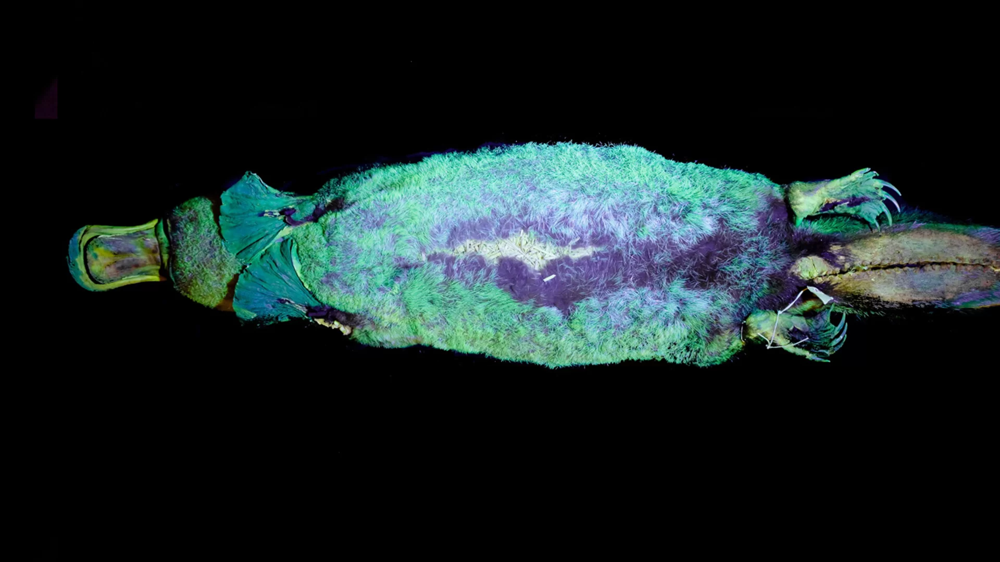

Ornitorrincos:
Você já deve ter ouvido falar dos ornitorrincos, todos sabem que essas criaturas são bastante peculiares afinal elas parecem uma mistura de diversos animais em um só, serio qual outro mamifero bota ovo, tem veneno e garras bastante afiadas mas adivinhe ainda nos dias de hoje este pequeno animal ainda continua nós surpriendendo, afinal ELE BRILHA NO ESCURO.
A revista cientifica Mammali publicou a descoberta de que os ornitorrincos tambem apresentam um brilho verde sob luz ultra-violeta. Agora com essa descoberta o ornitorrinco entra para um grupo muito exclusivo, já que é um dos três unicos mamiferos bioflurecentes conhecidos, os outros dois sendo os gambás e os esquilos voadores
